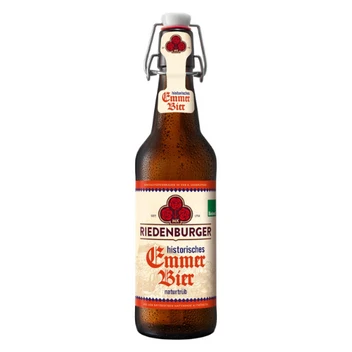

Riedenburger Historisches Emmerbier 0,5L
2,09 €
Hersteller: Riedenburger Brauhaus Michael Krieger GmbH & Co.KG (Hammerweg 5, 93339 Riedenburg) Zutaten: Wasser, EMMERmalz, GERSTENmalz, WEIZENmalz, DINKELmalz, Hopfen, Hefe Enthält Alkohol. Gekühlt bei 8-12 °C lagern
Jetzt im Online-Shop kaufen ↗Bestellung & Bezahlung sicher über unseren Partner-Shop bioladen-borna.de